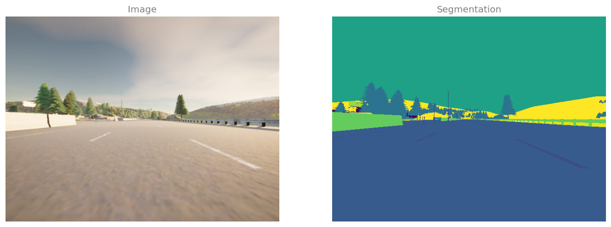
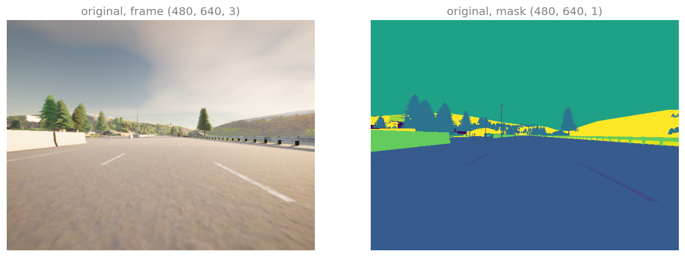
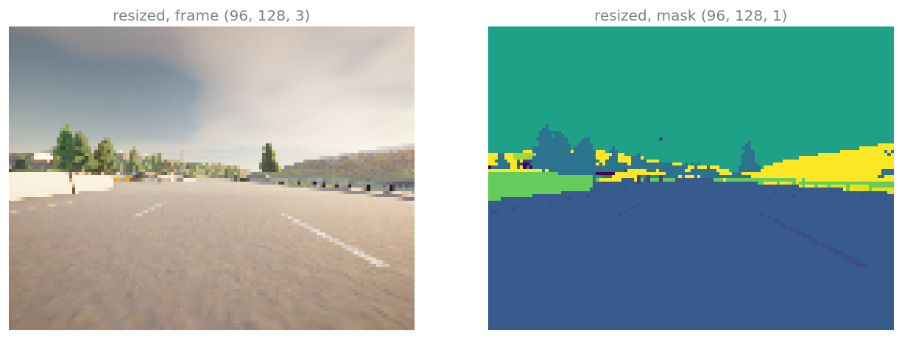
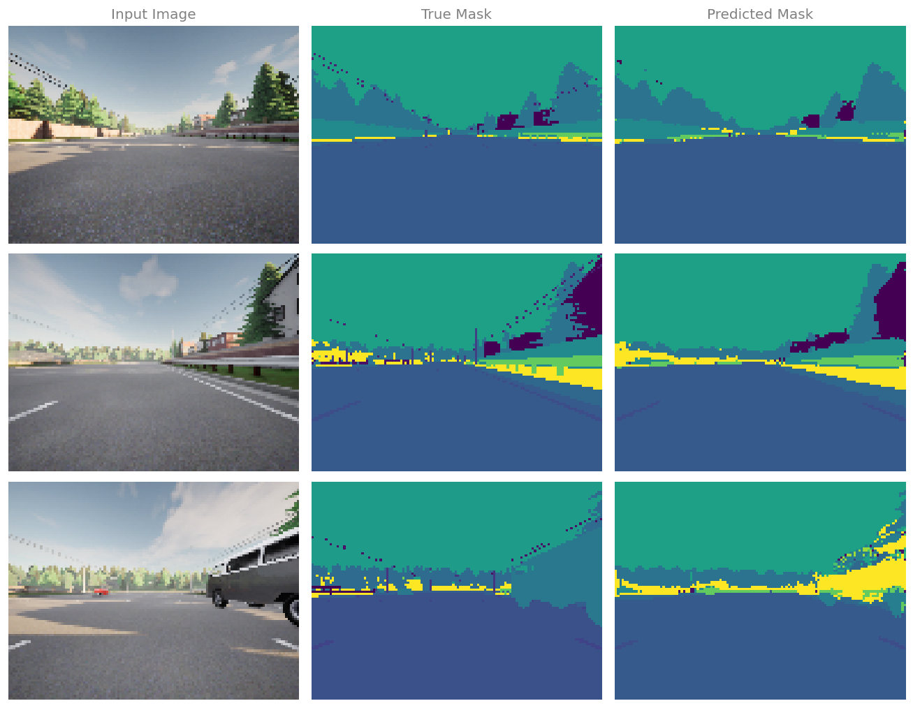
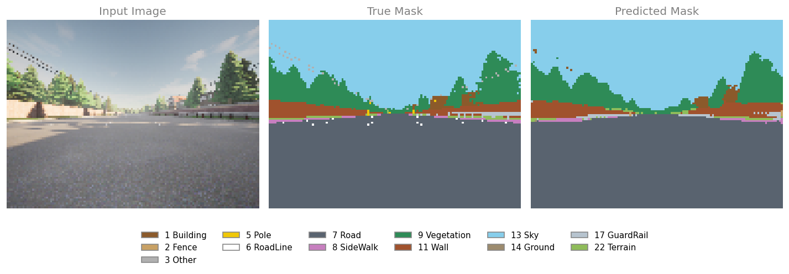

Build a U-Net in Keras from an encoder block and a decoder block, then train it to label every pixel of a driving scene with one of 23 classes.
Published
Wednesday, August 19, 2026
Semantic Segmentation with U-Net argued the case for labeling every pixel rather than drawing a box, introduced the transpose convolution that grows a representation back to full size, and drew the U. This lab builds that U in Keras and trains it.
The data is a run of 1060 frames from a camera on a car, rendered by a driving simulator, and every frame comes with a mask that records what each of its pixels belongs to. Road, sky, building, vegetation, and 18 other categories. Nothing is approximate about these labels, because the simulator knew what it was drawing when it drew each pixel, so the boundaries are exact.
Two functions carry the whole architecture. conv_block is one step down the contracting path, and upsampling_block is one step up the expanding path. Chaining five of the first and four of the second, plus two convolutions at the end, is the entire model. Everything after that is a standard Keras training loop, with one detail that is specific to segmentation, namely the loss.
Packages
The imports are the layers the model is built from, and nothing else. Conv2D and MaxPooling2D build the contracting path, Conv2DTranspose and concatenate build the expanding path, and Dropout regularizes the two deepest blocks.
Seeding is done with tf.keras.utils.set_random_seed, which covers the Python, NumPy, and TensorFlow generators in one call, and enable_op_determinism goes further by forcing individual TensorFlow operations to produce the same result every time they run on the same input. Together they fix the weight initialization, the shuffle order, and the dropout masks, so the numbers printed on this page are the numbers you get. This is the recipe the original assignment supplies for reproducible runs, and on this model it costs about one second per epoch.
The dataset is two folders with matching filenames. CameraRGB/000026.png is a camera frame, and CameraMask/000026.png is the label mask for that exact frame. Pairing them is therefore a matter of listing one folder and building both paths from the same names.
Listing one folder rather than two is not laziness, it is the thing that guarantees the pairing. Two separate os.listdir calls would return two lists in whatever order the filesystem chose, and a frame could end up trained against another frame’s mask.
NoteLab Files Download
This lab needs the camera frames and their masks, and nothing else. There is no pretrained weight file, because the model here is trained from scratch.
The 2120 images run to 526 MB, which is far too large to host with the site, so they live on Google Drive as one folder per kind.
CameraMask, 1060 label masks, one per frame, same filenames
README.txt records the class numbering, the pixel frequency of every class, and where the data comes from
Download both folders and arrange them next to your notebook as data/CameraRGB/ and data/CameraMask/, keeping the folder names exactly as they are, because the code below builds its paths from them.
path =''image_path = os.path.join(path, '../../../media/deep-learning/image-segmentation-unet/data/CameraRGB/')mask_path = os.path.join(path, '../../../media/deep-learning/image-segmentation-unet/data/CameraMask/')image_list_orig =sorted(os.listdir(image_path))image_list = [image_path + i for i in image_list_orig]mask_list = [mask_path + i for i in image_list_orig]print("frames:", len(image_list))print("first three:", image_list_orig[:3])
frames: 1060
first three: ['000026.png', '000027.png', '000028.png']
Looking at one pair before anything else is the habit worth keeping. The frame is an ordinary picture. The mask is not, and the figure below is what makes that clear.
N =2img = np.array(Image.open(image_list[N])) # the original notebook uses imageio.imreadmask = np.array(Image.open(mask_list[N]))fig, arr = plt.subplots(1, 2, figsize=(12, 4.2))arr[0].imshow(img)arr[0].set_title('Image', fontsize=12, color='gray')arr[1].imshow(mask[:, :, 0])arr[1].set_title('Segmentation', fontsize=12, color='gray')for ax in arr: ax.axis('off')plt.tight_layout()plt.show()print("frame shape:", img.shape, img.dtype)print("mask shape: ", mask.shape, mask.dtype)print("values in mask channel 0:", np.unique(mask[:, :, 0]))print("values in mask channel 1:", np.unique(mask[:, :, 1])," channel 2:", np.unique(mask[:, :, 2]))

One frame of the run and the mask that goes with it. The mask is drawn with matplotlib’s default colormap, which maps its smallest value to dark and its largest to bright, so the colors here are a reading aid rather than anything stored in the file.
Both files are 480 by 640 with four channels, and the frame is exactly what the camera saw. The mask only looks like a picture. Channel 0 of each of its pixels holds a class index, channels 1 and 2 are zero everywhere, and the fourth channel is the alpha channel that PNG carries whether or not anything uses it. The value 7 in the mask does not mean a dark grey pixel, it means road.
Opened in an image viewer the file would look almost black, since the largest index in use is 22 out of the 255 a byte can hold. That is expected, and it is why the figure above passes the mask through a colormap.
The index values are the semantic tags of the CARLA driving simulator, version 0.9.11, which is where the number 23 in the model comes from. There are 23 of them, numbered 0 to 22.
NoteClass Numbering
The original assignment states that there are 23 classes without saying what any of them are, so the table below was verified against the CARLA 0.9.11 sensor reference rather than taken from the notebook. It matters which version, because CARLA renumbered its tags in 0.9.12 and the table in the current documentation does not describe these files.
0
Unlabeled
6
RoadLine
12
TrafficSign
18
TrafficLight
1
Building
7
Road
13
Sky
19
Static
2
Fence
8
SideWalk
14
Ground
20
Dynamic
3
Other
9
Vegetation
15
Bridge
21
Water
4
Pedestrian
10
Vehicles
16
RailTrack
22
Terrain
5
Pole
11
Wall
17
GuardRail
Counting how often each index occurs across all 1060 masks says something about the problem that the architecture cannot.
CARLA_CLASSES = ['Unlabeled', 'Building', 'Fence', 'Other', 'Pedestrian', 'Pole','RoadLine', 'Road', 'SideWalk', 'Vegetation', 'Vehicles', 'Wall','TrafficSign', 'Sky', 'Ground', 'Bridge', 'RailTrack', 'GuardRail','TrafficLight', 'Static', 'Dynamic', 'Water', 'Terrain']# counted once over all 1060 masks; see the README beside the dataSHARE = [0.0, 7.421, 0.358, 0.052, 0.042, 0.404, 1.507, 43.402, 1.899, 6.395,0.568, 1.216, 0.012, 32.173, 0.101, 0.175, 0.085, 1.028, 0.036, 0.258,0.072, 0.003, 2.794]for index in np.argsort(SHARE)[::-1][:8]:print(f"{index:>3}{CARLA_CLASSES[index]:<12}{SHARE[index]:>7.3f} %")print(f"\ntop two classes together: {SHARE[7] + SHARE[13]:.1f} % of all pixels")
7 Road 43.402 %
13 Sky 32.173 %
1 Building 7.421 %
9 Vegetation 6.395 %
22 Terrain 2.794 %
8 SideWalk 1.899 %
6 RoadLine 1.507 %
11 Wall 1.216 %
top two classes together: 75.6 % of all pixels
Road and sky are three quarters of every pixel in the dataset, and pedestrians are four hundredths of one percent. A model that learned nothing except “bright things at the top are sky, flat things at the bottom are road” would already score around 75 percent pixel accuracy. Keep that number in mind when the accuracy curve appears later, because it is the score to beat, not zero.
Review Questions
1. Why does the code list only CameraRGB and build the mask paths from those names, instead of listing both folders?
TipAnswer
Because the pairing between a frame and its mask is carried by the filename, and building both paths from one list makes that pairing structural. Two separate os.listdir calls return two independently ordered lists, and nothing guarantees that position \(i\) in one corresponds to position \(i\) in the other. If the orders differed, every training example would be a frame supervised by some other frame’s mask, and the model would be fitting noise while the code ran without complaint.
1. The mask file has three color channels, yet only one of them holds information. Why is the label stored as an image at all?
TipAnswer
Because a mask is a value per pixel on the same grid as the frame, which is exactly what an image file stores, and PNG is lossless so the integers survive the round trip unchanged. A lossy format would be fatal here, since a JPEG artifact that turned a 7 into an 8 would silently relabel road as sidewalk. The two unused channels are the price of a standard format, and they cost nothing once the loading code collapses them.
1. Road and sky account for 75 percent of the pixels. What does that imply about using pixel accuracy to judge the model?
TipAnswer
That accuracy has a high floor and a compressed useful range. Getting the two dominant classes roughly right already yields about 75 percent, so the informative part of the scale runs from there to 100 rather than from 0. It also means accuracy is nearly blind to the classes that matter most for driving, since pedestrians are 0.042 percent of the pixels and a model could miss every one of them while its accuracy moved in the fourth decimal place. Segmentation work usually reports intersection over union averaged over classes for that reason, which gives a rare class the same weight as a common one.
Input Pipeline
Keras is given a tf.data.Dataset rather than an array of images. The reason is size. 1060 frames at 480 by 640 by 3 floats is over 3 GB if held in memory at once, so the pipeline streams instead, reading and decoding files as batches are needed.
The dataset starts as pairs of file paths, not pixels. from_tensor_slices takes the two lists of strings and produces a dataset whose elements are one path and one path.
Turning a pair of paths into a pair of tensors is the job of process_path, and three of its lines deserve attention.
tf.image.convert_image_dtype(img, tf.float32) does two things in one call. It changes the type and it rescales, mapping the byte range 0 to 255 onto the float range 0 to 1, so there is no separate division by 255 to remember. Doing it through this function rather than by hand is the safer habit, since it takes the scale factor from the input type rather than from an assumption about it.
decode_png(mask, channels=3) forces the mask to three channels, which drops the alpha channel. tf.math.reduce_max(mask, axis=-1, keepdims=True) then collapses those three to one by taking the largest. Since channels 1 and 2 are zero, the largest is always channel 0, which is the class index. keepdims=True leaves a trailing axis of length 1, so the mask stays a rank 3 tensor of shape height by width by 1 rather than collapsing to a flat grid.
The mask is deliberately not converted to float. It stays an integer class index, because that is what the loss will expect.
preprocess shrinks both to 96 by 128, which is one fifth of the original in each direction and one twenty fifth of the pixels. That is a concession to computation, not a design choice, and it is the single reason this lab trains in minutes rather than hours.
The method='nearest' on the mask is not optional. Every other resizing method averages neighboring pixels, and averaging class indices produces nonsense. Halfway between 7 for road and 9 for vegetation is 8, which is sidewalk, a class that was never there. Nearest neighbor copies the value of the closest source pixel, so every output value is a class that genuinely occurred. The frame is resized the same way for no reason other than symmetry, since averaging colors would have been fine.
Looking at the pair before and after preprocessing confirms both the shrink and the type change.
def show_pair(image, mask, title):"""One frame beside its mask, with the mask passed through a colormap.""" fig, arr = plt.subplots(1, 2, figsize=(11, 3.9)) arr[0].imshow(image) arr[0].set_title(f'{title}, frame {tuple(image.shape)}', fontsize=12, color='gray') arr[1].imshow(mask[:, :, 0]) arr[1].set_title(f'{title}, mask {tuple(mask.shape)}', fontsize=12, color='gray')for ax in arr: ax.axis('off') plt.tight_layout() plt.show()for image, mask in image_ds.take(1): show_pair(image.numpy(), mask.numpy(), 'original')for image, mask in processed_image_ds.take(1): show_pair(image.numpy(), mask.numpy(), 'resized')print("frame dtype", image.dtype, "range %.2f to %.2f"% (float(tf.reduce_min(image)), float(tf.reduce_max(image))))print("mask dtype", mask.dtype, "range %d to %d"% (int(tf.reduce_min(mask)), int(tf.reduce_max(mask))))

Original frame and segmentation mask.

Resized frame and segmentation mask.
frame dtype <dtype: 'float32'> range 0.08 to 1.00
mask dtype <dtype: 'uint8'> range 1 to 22
The same frame at full resolution and at the 96 by 128 the network sees. The shapes the model has to segment survive the shrink, while thin structures such as poles and lane markings barely do.
The frame comes out as floats between 0 and 1 and the mask comes out as bytes holding class indices. Those two types are what the rest of the lab is built around.
Review Questions
1. Why must the mask be resized with method='nearest' while the frame could be resized any way at all?
TipAnswer
Because the numbers in a mask are names, not quantities. Bilinear resizing takes weighted averages of neighboring values, and the average of class 7 and class 9 is class 8, which denotes a different category that may not appear anywhere near that pixel. Nearest neighbor copies one source value, so every result is a label that actually occurred. A frame holds real intensities, where an average of two neighboring reds is a legitimate red, so any interpolation is fine there.
1. process_path converts the frame to float but leaves the mask as an integer. Why the difference?
TipAnswer
Because they play different roles. The frame is network input, and neural networks train better on small centered numbers than on values up to 255, so it is scaled to the range 0 to 1. The mask is the target of a sparse categorical loss, which expects an integer index naming the correct class at each position, and uses it to look up one entry of the prediction vector. Turning that index into a float would be meaningless at best, since 7.0 is not a category.
1. What does keepdims=True change in the reduce_max call, and why does it matter?
TipAnswer
It keeps the reduced axis instead of dropping it, so the mask has shape 480 by 640 by 1 rather than 480 by 640. That matters because tf.image.resize expects an image-shaped tensor with a channel axis, and because Keras compares the target with a prediction of shape 96 by 128 by 23 along the last axis. Keeping the trailing 1 makes the target line up with that layout without a later reshape.
Encoder Block
conv_block is one rung of the contracting path, and it has three parts.
Two Conv2D layers with padding='same' do the feature extraction. Same padding means the output keeps the height and width of the input, so the block changes the spatial size only where it means to, in the pooling layer. The he_normal initializer is the variance-scaling scheme matched to ReLU, which is the He initialization that keeps activations from shrinking or exploding as they pass through a deep stack.
Dropout is applied only when dropout_prob is above zero, which the full model does for the two deepest blocks alone. Those are the blocks with the most channels, so they hold most of the parameters and are the ones with the most capacity to overfit.
Max pooling halves the height and width, and it is skipped for the block at the bottom of the U, because the bottom is where descending stops.
The block returns two tensors, and the difference between them is the whole point of the skip connections.
next_layer goes down to the next block. When pooling is on, this is the pooled, half sized tensor.
skip_connection goes across to the matching block on the way up. This is always the tensor before pooling, at full size.
Taking the skip from before the pooling is what gives the expanding path something at the resolution it needs. Handing it the pooled tensor would pass across a version of the features that has already lost the fine detail the skip exists to restore.
def conv_block(inputs=None, n_filters=32, dropout_prob=0, max_pooling=True):""" Convolutional downsampling block Arguments: inputs -- Input tensor n_filters -- Number of filters for the convolutional layers dropout_prob -- Dropout probability max_pooling -- Use MaxPooling2D to reduce the spatial dimensions of the output volume Returns: next_layer, skip_connection -- Next layer and skip connection outputs """ conv = Conv2D(n_filters, # Number of filters3, # Kernel size activation='relu', padding='same', kernel_initializer='he_normal')(inputs) conv = Conv2D(n_filters, # Number of filters3, # Kernel size activation='relu', padding='same', kernel_initializer='he_normal')(conv)# if dropout_prob > 0 add a dropout layer, with the variable dropout_prob as parameterif dropout_prob >0: conv = Dropout(dropout_prob)(conv)# if max_pooling is True add a MaxPooling2D with 2x2 pool_sizeif max_pooling: next_layer = MaxPooling2D(pool_size=(2, 2))(conv)else: next_layer = conv skip_connection = convreturn next_layer, skip_connection
Wrapping a block in a throwaway model is how its shapes and parameter counts can be read off directly. The helper below prints one row per layer, and it is used again for the decoder block and for the finished network.
def layer_table(model):"""Layer type, output shape and parameter count, one row per layer."""print(f"{'layer':<18}{'output shape':>22}{'parameters':>12}")for layer in model.layers:print(f"{type(layer).__name__:<18}{str(layer.output.shape):>22} "f"{layer.count_params():>12,}")print(f"{'total':<18}{'':>22}{model.count_params():>12,}")input_size = (96, 128, 3)n_filters =32inputs = Input(input_size)cblock1 = conv_block(inputs, n_filters *1)model1 = tf.keras.Model(inputs=inputs, outputs=cblock1)layer_table(model1)
Every number in that table can be derived rather than taken on trust.
The first convolution has \(3 \times 3 \times 3 \times 32 = 864\) weights and 32 biases, giving 896 parameters, where the third 3 is the channel count of the input. The second sees 32 channels instead of 3, so it has \(3 \times 3 \times 32 \times 32 + 32 = 9248\). Same padding keeps both outputs at 96 by 128, and pooling with a 2 by 2 window and the matching stride halves both to 48 by 64 without adding a single parameter.
Turning on dropout and widening the block shows the two optional parts and how quickly the cost grows with the filter count.
Dropout appears as its own layer, with no parameters and no change of shape, since all it does is zero out a random 30 percent of the values while training. Eight times the filters costs roughly sixty four times the parameters in the second convolution, because that layer’s weight count scales with the product of its input and output channel counts, and both went up by a factor of eight.
Review Questions
1. Why is skip_connection taken before max pooling rather than after?
TipAnswer
Because the skip exists to hand the expanding path the spatial detail the contracting path is throwing away, and pooling is the step that throws it away. The pre-pooling tensor is at full resolution for that level of the U, which is exactly the resolution the matching decoder block will be working at after its transpose convolution, so the two line up and can be concatenated. The pooled tensor is half that size and has already discarded three quarters of the positions, so passing it across would carry over the information the decoder can already reconstruct and none of the information it is missing.
1. Why does padding='same' matter in a network whose whole design is about changing spatial size?
TipAnswer
Because it puts every change of size in one place. With same padding the convolutions leave height and width untouched, so the only layers that shrink the tensor are the pooling layers and the only ones that grow it are the transpose convolutions. The size at every level of the U is then a clean power of two relationship, and the skip connection at each level matches its partner exactly. With valid padding each convolution would shave pixels off the border, the two sides of the U would drift out of alignment, and the tensors would have to be cropped before they could be concatenated, which is precisely what the original U-Net paper had to do.
1. The block applies its ReLU inside the Conv2D layers through activation='relu'. What is the difference between doing that and adding a separate activation layer?
TipAnswer
Nothing mathematically. The layer computes the convolution and then applies the function, which is the same composition either way, and the parameter count is identical because ReLU has no parameters. The difference is bookkeeping. Folding it in gives a shorter model summary, while a separate layer makes the activation visible as its own row and is what you need when something has to happen between the convolution and the nonlinearity, most commonly batch normalization.
Decoder Block
upsampling_block is one rung of the expanding path, and it is the mirror of the encoder block with the skip connection joined in.
Conv2DTranspose with strides=(2, 2) is the transpose convolution that doubles height and width. Unlike an interpolated resize it has weights, so the network learns how to grow the representation rather than following a fixed rule.
concatenate([up, contractive_input], axis=3) is the skip connection. Axis 3 is the channel axis, so this stacks the two tensors channel-wise and leaves the height and width alone, which is only possible because the transpose convolution just brought up to the size the skip has always been. Note that concatenating is not adding. A residual connection adds its shortcut into the main path and keeps the channel count fixed, while U-Net keeps both sources side by side and lets the following convolutions decide how to weigh them.
Two Conv2D layers with the same settings as the encoder then mix the coarse upsampled features with the fine skipped ones, and reduce the stacked channels back to n_filters.
def upsampling_block(expansive_input, contractive_input, n_filters=32):""" Convolutional upsampling block Arguments: expansive_input -- Input tensor from previous layer contractive_input -- Input tensor from previous skip layer n_filters -- Number of filters for the convolutional layers Returns: conv -- Tensor output """ up = Conv2DTranspose( n_filters, # number of filters3, # Kernel size strides=(2, 2), padding='same')(expansive_input)# Merge the previous output and the contractive_input merge = concatenate([up, contractive_input], axis=3) conv = Conv2D(n_filters, # Number of filters3, # Kernel size activation='relu', padding='same', kernel_initializer='he_normal')(merge) conv = Conv2D(n_filters, # Number of filters3, # Kernel size activation='relu', padding='same', kernel_initializer='he_normal')(conv)return conv
Testing it needs two inputs of different shapes, a small deep one standing in for the tensor coming up from below, and a larger shallower one standing in for the skip arriving from the left.
input_size1 = (12, 16, 256) # coming up from the level belowinput_size2 = (24, 32, 128) # arriving across the skip connectionexpansive_inputs = Input(input_size1)contractive_inputs = Input(input_size2)ublock = upsampling_block(expansive_inputs, contractive_inputs, n_filters *1)model3 = tf.keras.Model(inputs=[expansive_inputs, contractive_inputs], outputs=ublock)layer_table(model3)
Read the output shape column downward and the block’s whole argument is visible.
The transpose convolution takes 12 by 16 by 256 to 24 by 32 by 32, doubling both spatial dimensions and cutting the channels from 256 to 32 in one layer. Its parameter count is \(3 \times 3 \times 256 \times 32 + 32 = 73{,}760\), the same formula an ordinary convolution uses, because a transpose convolution is the same set of weights applied with the roles of input and output swapped.
Concatenation then makes 24 by 32 by 160, since \(32 + 128 = 160\), and it costs nothing because stacking tensors is not arithmetic. The first convolution after it has \(3 \times 3 \times 160 \times 32 + 32 = 46{,}112\) parameters, and that is where the mixing happens, since each of its filters spans all 160 channels and therefore sees the upsampled features and the skipped features together. The second brings nothing new in and simply refines what the first produced.
Review Questions
1. Why does U-Net concatenate the skip connection instead of adding it, the way a ResNet does?
TipAnswer
Because the two connections solve different problems. A residual connection adds a shortcut to a path that is trying to learn a small correction, and adding keeps the channel count unchanged and makes the identity easy to represent. A U-Net skip is carrying different information rather than a correction, namely fine spatial detail that the deep path no longer has, and adding would blend it irreversibly with the coarse features. Concatenating keeps both intact and hands the following convolutions the choice of how much of each to use, at the cost of a wider tensor for those two layers. Adding would also be impossible here without extra work, since the two tensors have different channel counts.
1. The transpose convolution outputs 32 channels while the skip carries 128, so the merged tensor is 160 channels wide. Why does the block not stay at 160?
TipAnswer
Because the width would compound. Each level up would concatenate its own skip onto whatever came from below, so the channel count would grow monotonically toward the full-resolution end, exactly where the tensors are already largest and a convolution is most expensive. The two convolutions after the merge bring it back to n_filters, which lets the expanding path get thinner as it gets wider, mirroring the contracting path. They are also the layers that do the mixing, so the reduction and the combination happen in the same step rather than costing two.
Assembling U-Net
Both halves chain into the full model. Five encoder blocks descend, four decoder blocks ascend, and two convolutions finish.
The filter count doubles at each step down, from 32 to 512, and halves at each step up. Dropout of 0.3 is switched on for the last two encoder blocks, and the fifth block has max_pooling=False because it is the bottom of the U.
Every decoder block takes two arguments, and getting them the right way round is the fiddly part. The first is [0] of the block below, which is the tensor travelling upward. The second is [1] of the encoder block at the same level, which is the pre-pooling skip. So ublock6 pairs the bottom of the U with cblock4, ublock7 pairs that result with cblock3, and so on outward.
The last two layers are the ones that turn features into an answer. conv9 is an ordinary 3 by 3 convolution at full resolution, and conv10 is a \(1 \times 1\) convolution with n_classes filters. A \(1 \times 1\) filter looks at one pixel position across all channels and mixes them without touching neighbors, which is exactly a per-pixel decision. It has no activation, so its outputs are raw scores rather than probabilities, and that choice comes back in the loss.
def unet_model(input_size=(96, 128, 3), n_filters=32, n_classes=23):""" Unet model Arguments: input_size -- Input shape n_filters -- Number of filters for the convolutional layers n_classes -- Number of output classes Returns: model -- tf.keras.Model """ inputs = Input(input_size)# Contracting Path (encoding). Double the number of filters at each new step. cblock1 = conv_block(inputs, n_filters) cblock2 = conv_block(cblock1[0], n_filters *2) cblock3 = conv_block(cblock2[0], n_filters *4) cblock4 = conv_block(cblock3[0], n_filters *8, dropout_prob=0.3)# bottom of the U, so dropout stays on and the pooling comes off cblock5 = conv_block(cblock4[0], n_filters *16, dropout_prob=0.3, max_pooling=False)# Expanding Path (decoding). Halve the number of filters at each new step, and# take the skip from element [1] of the encoder block at the same level. ublock6 = upsampling_block(cblock5[0], cblock4[1], n_filters *8) ublock7 = upsampling_block(ublock6, cblock3[1], n_filters *4) ublock8 = upsampling_block(ublock7, cblock2[1], n_filters *2) ublock9 = upsampling_block(ublock8, cblock1[1], n_filters) conv9 = Conv2D(n_filters,3, activation='relu', padding='same', kernel_initializer='he_normal')(ublock9)# one score per class at every pixel, with no activation conv10 = Conv2D(n_classes, 1, padding='same')(conv9) model = tf.keras.Model(inputs=inputs, outputs=conv10)return modelimg_height =96img_width =128num_channels =3unet = unet_model((img_height, img_width, num_channels))print("total parameters:", f"{unet.count_params():,}")print("output shape: ", unet.output.shape)
total parameters: 8,640,471
output shape: (None, 96, 128, 23)
The output is 96 by 128 by 23, one score per class at every pixel of the input grid. That is the shape the concept page predicted, with height and width equal to the input and depth equal to the number of classes.
Printing every layer is worth the space here, because the output shape column traces the U itself.
Follow the shapes down and back up. The height goes 96, 48, 24, 12, 6 and then 12, 24, 48, 96, the width goes 128, 64, 32, 16, 8 and back the same way, and the channel count goes 32, 64, 128, 256, 512 on the way down and returns to 32 on the way up. The narrowest point is 6 by 8 by 512, which is 48 spatial positions where the input had 12,288, and 512 channels where the input had 3. Position traded for depth, one pooling layer at a time.
The Concatenate rows are where the skips arrive, and each one widens the tensor exactly by the channel count of its partner on the left side of the U. The parameter column shows where the weight is, namely in the middle blocks where the channel counts are largest, while the layers at full resolution are cheap in parameters and expensive in arithmetic.
Review Questions
1. Why does cblock5 set max_pooling=False?
TipAnswer
Because it is the bottom of the U and nothing descends further. Its output feeds the first decoder block, which begins by doubling the spatial size, so pooling here would immediately be undone and would only discard three quarters of the positions on the way through. It also has no partner on the expanding path to skip to, since it is the turning point rather than a level of the U.
1. Each decoder block receives cblockN[1] rather than cblockN[0]. What would break if [0] were passed instead?
TipAnswer
The shapes would not match, so the model would fail to build. Element [0] is the output after pooling, at half the height and width of element [1], and the transpose convolution has just brought the ascending tensor up to the size of [1]. Concatenating along the channel axis requires the other axes to agree, so Keras would reject it. That failure is fortunate, because if the sizes happened to align the model would build and quietly train on the wrong tensor, passing across features that had already lost the detail the skip exists to supply.
1. The final layer is a \(1 \times 1\) convolution with 23 filters and no activation. Why is a dense layer not used instead, as it would be in a classifier?
TipAnswer
Because a dense layer flattens, and flattening destroys the spatial arrangement that the whole network was built to preserve. It would also fix the input size, since its weight matrix depends on the number of positions. A \(1 \times 1\) convolution applies the same 23-way mapping independently at each of the 12,288 pixel positions, which is what a per-pixel decision means, and it does so with \(32 \times 23 + 23\) parameters regardless of how large the image is. Leaving off the activation is a separate choice, made so the loss can apply the softmax itself.
Loss for Per-Pixel Classification
The model outputs 23 numbers at every pixel and the mask holds one integer at every pixel, so the loss has to compare a vector of scores with an index. That is what SparseCategoricalCrossentropy does.
The sparse part is about how the target is written. Ordinary categorical cross entropy expects one-hot targets, which here would mean a 96 by 128 by 23 tensor of zeros with a single 1 per pixel, 23 times the memory to carry the same information. The sparse version takes the index directly and looks up the matching score, which is both cheaper and exactly the form the mask already has.
from_logits=True says the model’s outputs are raw scores rather than probabilities, so the loss applies the softmax itself. Doing it inside the loss is more numerically stable, because cross entropy needs the logarithm of a probability, and a confident prediction can round to exactly 0 once the softmax has been applied separately, at which point the logarithm is infinite. Keeping the two together lets TensorFlow use a formulation that never takes that logarithm of a rounded value. This is the same argument as the from_logits=True in the MobileNetV2 lab, one class at a time rather than 23.
loss: sparse_categorical_crossentropy
from_logits: True
optimizer: adam
Review Questions
1. What would go wrong if the final convolution had activation='softmax' and the loss kept from_logits=True?
TipAnswer
The softmax would be applied twice, once by the layer and once inside the loss. The second application would take the softmax of numbers already squeezed into the range 0 to 1, which flattens the distribution toward uniform, since the largest gap between any two inputs is now at most 1. Gradients would be small and undifferentiated, and training would crawl or stall. The model would still run, which is what makes the mistake easy to miss.
1. Accuracy is reported per pixel here rather than per image. What does a single accuracy number actually count?
TipAnswer
The fraction of pixel positions whose arg max class equals the label at that position, averaged over every pixel of every image in the batch. Each 96 by 128 frame contributes 12,288 independent decisions, so one batch of 32 contributes nearly 400,000. That makes the number statistically stable from the very first batch, and it also makes it dominated by whichever classes cover the most area, which for this dataset means road and sky.
Training
Three transformations turn the dataset into something fit can consume, and their order matters.
cache() keeps the decoded, resized tensors in memory after the first pass, so the PNG decoding and the resizing happen once instead of once per epoch. It goes first because everything before it is what gets cached. At 96 by 128 the whole dataset is small enough to hold, which is another dividend of the resize.
shuffle(500) fills a buffer with 500 elements and draws randomly from it, refilling as it goes. It is not a full shuffle of all 1060, it is a moving window, which is the usual compromise between randomness and memory. It goes after the cache so that a different order comes out each epoch.
batch(32) groups the result into batches of 32, giving 34 steps per epoch for 1060 frames, with the last batch short.
EPOCHS =15BUFFER_SIZE =500BATCH_SIZE =32train_dataset = processed_image_ds.cache().shuffle(BUFFER_SIZE).batch(BATCH_SIZE)print(processed_image_ds.element_spec)print("steps per epoch:", int(np.ceil(1060/ BATCH_SIZE)))
There is no validation split here. The original assignment trains on all 1060 frames and reads the training accuracy, and this page keeps that, so every number below describes how well the model fits data it has seen. That is enough to show a U-Net learning, and it is not enough to claim the model generalizes.
model_history = unet.fit(train_dataset, epochs=EPOCHS, verbose=0)h = model_history.historyprint(f"{'epoch':>6}{'loss':>10}{'accuracy':>10}")for e inrange(EPOCHS):print(f"{e+1:>6}{h['loss'][e]:>10.4f}{h['accuracy'][e]:>10.4f}")
Training loss and pixel accuracy over 15 epochs. The dashed line marks the roughly 75 percent that road and sky alone are worth.
It takes three epochs to clear the road-and-sky line, and the curve then climbs steadily, still rising at the last epoch, which says 15 epochs is where this run stopped rather than where it converged. The original assignment notes that 40 epochs gives noticeably better masks, and also warns that more epochs are not automatically better, since there is no validation set here to say when fitting turns into memorizing.
Reading the Predictions
The model outputs 23 scores per pixel, and a mask needs one class per pixel, so something has to reduce that axis. tf.argmax(pred_mask, axis=-1) takes the index of the largest score at each position, which is the predicted class. [..., tf.newaxis] puts the trailing axis of length 1 back so the result has the same shape as a true mask, and [0] returns the first image of the batch.
Note what is missing. There is no softmax anywhere in here, and none is needed, because softmax is monotonic and therefore does not change which entry is largest. Probabilities would be required to report a confidence, not to pick a winner.
The display function puts a frame, its true mask, and the predicted mask side by side. array_to_img converts an array to a viewable image, and it rescales as it goes, mapping the smallest value present to black and the largest to white. So the grey level of a region is not its class number, and the same class can appear at a different brightness in two panels whose ranges differ. It is a picture of the mask, useful for judging shapes, and it is not a legend.
def display(display_list, axes, show_titles=True):"""One frame, its true mask, and a predicted mask, side by side on one row.""" title = ['Input Image', 'True Mask', 'Predicted Mask']for i inrange(len(display_list)): axes[i].imshow(tf.keras.utils.array_to_img(display_list[i]))if show_titles: axes[i].set_title(title[i], fontsize=12, color='gray') axes[i].axis('off')def show_predictions(dataset, num=1):""" Displays the first image of each of the num batches, one row each """ fig, axes = plt.subplots(num, 3, figsize=(11, 2.85* num)) axes = np.atleast_2d(axes)for row, (image, mask) inenumerate(dataset.take(num)): pred_mask = unet.predict(image, verbose=0) display([image[0], mask[0], create_mask(pred_mask)], axes[row], row ==0) plt.tight_layout() plt.show()
show_predictions(train_dataset, 3)

Three frames with their true and predicted masks. Large regions are recovered cleanly, and most of the errors sit on boundaries, on small objects, and between categories that look alike at this resolution.
The large regions come out right. Road, sky, building, and vegetation are placed where they belong and their boundaries follow the real edges rather than blurring across them, which is the skip connections doing their work. The mistakes are where you would expect them to be, on thin structures such as poles and lane markings that a 96 by 128 grid barely resolves, and on the rare classes that a few hundredths of a percent of the pixels cannot teach.
The grayscale panels make it hard to say which class was confused with which. Mapping each index to a fixed color, with the same mapping in both panels, answers that.
# one color per CARLA class index, chosen for legibility rather than taken from the dataCLASS_COLORS = ['#000000', '#8B5A2B', '#C8A165', '#B0B0B0', '#E23A3A', '#F0C808','#FFFFFF', '#59636F', '#C77FBF', '#2E8B57', '#4682B4', '#A0522D','#FFD700', '#87CEEB', '#9C8B6E', '#7F7F9F', '#6B4E31', '#B7C4CF','#FF8C00', '#9467BD', '#E377C2', '#00CED1', '#8FBC5A']cmap = ListedColormap(CLASS_COLORS)norm = BoundaryNorm(np.arange(-0.5, 23.5), cmap.N)for image, mask in train_dataset.take(1): true_mask = mask[0].numpy()[:, :, 0] pred_mask = create_mask(unet.predict(image, verbose=0)).numpy()[:, :, 0]fig, axes = plt.subplots(1, 3, figsize=(12, 3.6))axes[0].imshow(image[0].numpy())axes[0].set_title('Input Image', fontsize=12, color='gray')axes[1].imshow(true_mask, cmap=cmap, norm=norm, interpolation='nearest')axes[1].set_title('True Mask', fontsize=12, color='gray')axes[2].imshow(pred_mask, cmap=cmap, norm=norm, interpolation='nearest')axes[2].set_title('Predicted Mask', fontsize=12, color='gray')for ax in axes: ax.axis('off')present =sorted(set(np.unique(true_mask)) |set(np.unique(pred_mask)))fig.legend(handles=[Patch(facecolor=CLASS_COLORS[c], edgecolor='#888888', label=f'{c}{CARLA_CLASSES[c]}') for c in present], loc='lower center', ncol=6, frameon=False, fontsize=9, bbox_to_anchor=(0.5, -0.16))plt.tight_layout()plt.show()print(f"pixel agreement on this frame: {(true_mask == pred_mask).mean():.1%}")print("classes in the true mask: ", sorted(np.unique(true_mask).tolist()))print("classes in the predicted mask: ", sorted(np.unique(pred_mask).tolist()))

The same comparison with one fixed color per class, so the two mask panels can be read against each other. The colors are chosen here for legibility and are not stored in the data.
pixel agreement on this frame: 96.5%
classes in the true mask: [1, 3, 5, 6, 7, 8, 9, 11, 13, 17, 22]
classes in the predicted mask: [1, 2, 7, 8, 9, 11, 13, 14, 17, 22]
The two lists of classes rarely match exactly, and the difference runs both ways. A class present in the truth and missing from the prediction is one the model failed to find, usually something small and rare. A class present in the prediction and missing from the truth is a confusion, usually between two categories that look alike in a 96 by 128 frame, such as a wall against a building or terrain against vegetation.
Review Questions
1. create_mask applies argmax to raw scores, with no softmax. Why is that not a bug?
TipAnswer
Because softmax is monotonic, so it preserves the ordering of the values it is applied to. The largest raw score is always the largest probability, and argmax only asks which entry is largest. Applying the softmax first would cost an exponential and a normalization per pixel and give the same answer. It would be needed only to report how confident the prediction is, or to compare a probability against a threshold, neither of which happens here.
1. Why can the grey level of a region in the array_to_img panels not be read as a class number?
TipAnswer
Because array_to_img rescales its input to the display range 0 to 255, mapping the smallest value present to black and the largest to white. The mapping therefore depends on which classes happen to appear in that particular mask, so class 7 is drawn at one brightness in a frame whose largest index is 22 and at a different brightness in a frame whose largest index is 13. Comparing the true and predicted panels by eye works for shapes and fails for identity, which is why the second figure fixes a color per class instead.
1. The model reaches nearly 94 percent pixel accuracy, yet the predicted masks visibly miss poles and lane markings. How can both be true?
TipAnswer
Because accuracy is an area measurement and those objects have almost no area. Poles are 0.4 percent of the pixels and traffic signs are 0.012 percent, so getting every one of them wrong moves the score by a fraction of a percent, while the road and sky that dominate the frame are easy and carry three quarters of the weight. The metric is reporting honestly on the question it was asked, and the question is a poor match for what the masks are wanted for. A per-class measure such as mean intersection over union would rank a model that finds the poles above one that does not.
Summary
The lab built a U-Net out of two functions and trained it to label 12,288 pixels per frame across 23 classes.
Encoder and decoder are one function each.conv_block is two same-padded convolutions, optional dropout, and optional pooling, returning the pooled tensor to send down and the unpooled tensor to send across. upsampling_block is a transpose convolution, a concatenation, and two more convolutions. Five of the first and four of the second is the whole architecture.
Skips are taken before pooling and joined by concatenation. Before pooling, because the point is to carry the resolution the deep path is losing. By concatenation rather than addition, because the two sources hold different information and the following convolutions should decide how to weigh them.
Labels are images, and they resize differently from pictures. A mask is a grid of class indices stored in a lossless format, and it must be resized with nearest neighbor, since the average of two class numbers is a third class that was never there.
The output is scores, not probabilities. A \(1 \times 1\) convolution with one filter per class gives 96 by 128 by 23 raw scores, SparseCategoricalCrossentropy(from_logits=True) applies the softmax inside the loss where it is numerically safe, and argmax turns the scores into a mask without needing a softmax at all.
Pixel accuracy flatters this dataset. Road and sky are three quarters of the pixels, so 75 percent is the floor rather than a result, and the 93.6 percent reached after 15 epochs coexists with a predicted mask holding no poles and no lane markings at all on the frame shown above. The metric to reach for next is intersection over union averaged over classes, which is what IoU measured for boxes, applied to regions instead.
References
Dosovitskiy, A., Ros, G., Codevilla, F., Lopez, A., & Koltun, V. (2017). CARLA: An open urban driving simulator. In Proceedings of the 1st Annual Conference on Robot Learning, Proceedings of Machine Learning Research (Vol. 78, pp. 1-16). PMLR. https://proceedings.mlr.press/v78/dosovitskiy17a.html
Ronneberger, O., Fischer, P., & Brox, T. (2015). U-Net: Convolutional networks for biomedical image segmentation. In Medical Image Computing and Computer-Assisted Intervention, MICCAI 2015, Lecture Notes in Computer Science (Vol. 9351, pp. 234-241). Springer. https://doi.org/10.1007/978-3-319-24574-4_28
The frames and masks come from the “Image Segmentation with U-Net” programming assignment of the DeepLearning.AI Convolutional Neural Networks course, where they are supplied as simulator output rather than hand annotation. The class numbering was checked against the CARLA 0.9.11 sensor reference.